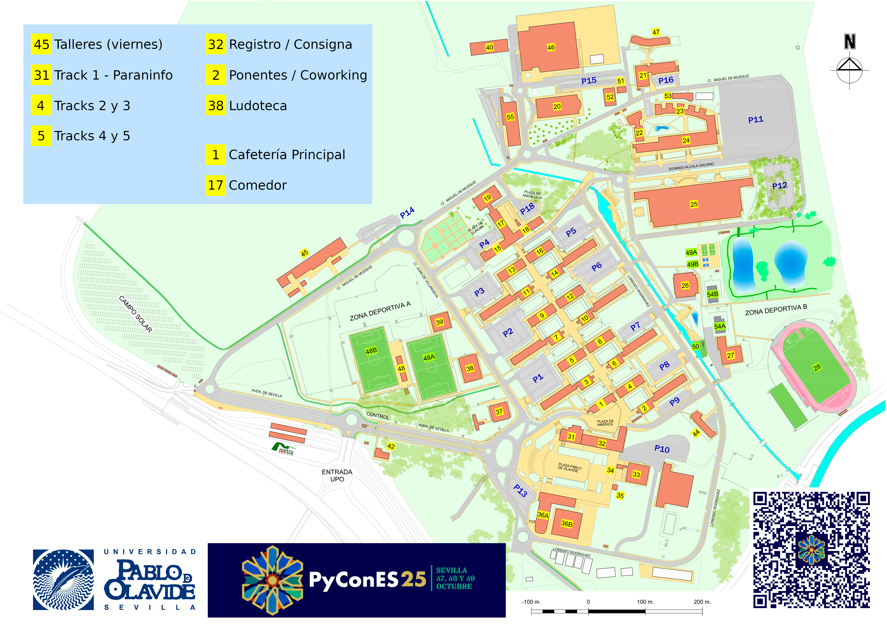

Construida sobre la antigua Universidad Laboral, el campus de la Universidad Pablo de Olavide (UPO) destaca tanto por sus instalaciones como por su historia. Desde 2008, está reconocido como Bien de Interés Cultural en el Catálogo General del Patrimonio Histórico Andaluz.

🏛️ Una Universidad Joven con Prestigio
Universidad Pablo de Olavide: de carácter más joven pero igualmente relevante, la Universidad Pablo de Olavide (UPO) es conocida por su enfoque en la interdisciplinariedad y la innovación. Con más de 14.000 estudiantes, la UPO se ha convertido en un referente en estudios relacionados con las ciencias sociales, el medio ambiente y las STEM, donde destaca su grado ingeniería informática, haciendo énfasis en la promoción del emprendimiento y la sostenibilidad. Además, su campus único facilita una experiencia universitaria cohesiva y moderna, donde todas las instalaciones académicas , de investigación (como el Centro Andaluz de Biología del Desarrollo entre otros) y de ocio están integradas.
🏢 Un Campus Único y Compacto
El campus de la UPO es un espacio integrado, con más de treinta edificios donde se concentran: - Todas las facultades y servicios universitarios. - Residencias universitarias. - Laboratorios, bibliotecas y centros de investigación. - Áreas deportivas y zonas de ocio.
Su diseño facilita la interacción y la colaboración entre estudiantes y profesores de distintas disciplinas, en un entorno rodeado de zonas verdes, creando un ambiente ideal para el estudio y la convivencia.
📍 Ubicación y Accesibilidad
Situada en las afueras de Sevilla, la UPO se encuentra entre los municipios de: - Sevilla capital. - Dos Hermanas. - Alcalá de Guadaíra.
Cuenta con una excelente accesibilidad, estando conectada por numerosos medios de transporte.
🚇 Transporte Público
- Metro: Línea 1 de Metro de Sevilla.
- Autobuses Urbanos:
- Líneas 38 y 38A de TUSSAM (Transporte Urbano de Sevilla S.A.M.).
- Autobuses Interurbanos:
- Línea M123 (Alcalá de Guadaíra).
- Línea M130 (Dos Hermanas).
🚲 Bicicleta y Vehículos de Movilidad Personal
- Conectada con la red de carriles bici de los municipios de Sevilla y Dos Hermanas.
- A la espera de la conexión con el futuro carril bici de Alcalá de Guadaíra.
- Dispone de numerosos bicicleteros en cada uno de los edificios del campus.
🚗 Vehículo Propio
- Acceso por la entrada principal desde la autovía A-376 (Sevilla-Utrera).
- También accesible desde la barriada de Condequinto (Dos Hermanas).
- Amplias zonas de estacionamiento disponibles.
Por otro lado, mencionar que el campus cuenta con acceso a Internet mediante dos redes inalámbricas: eduroam (para miembros de instituciones académicas y universitarias de toda Europa) y wupolan (con acceso para la comunidad universitaria de la propia UPO).
📍 Mapa del evento y sitios de interes (Google Maps)
